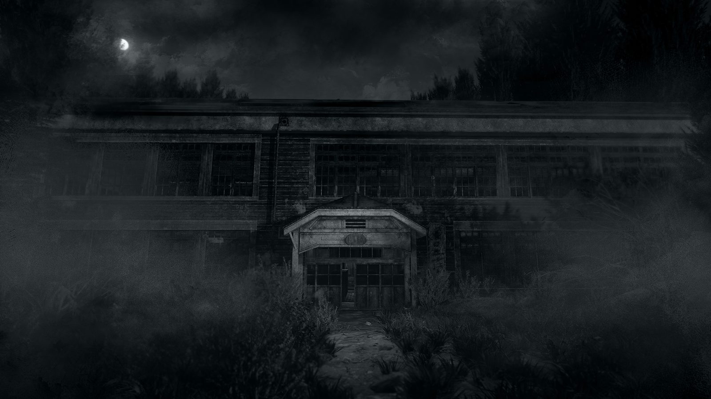
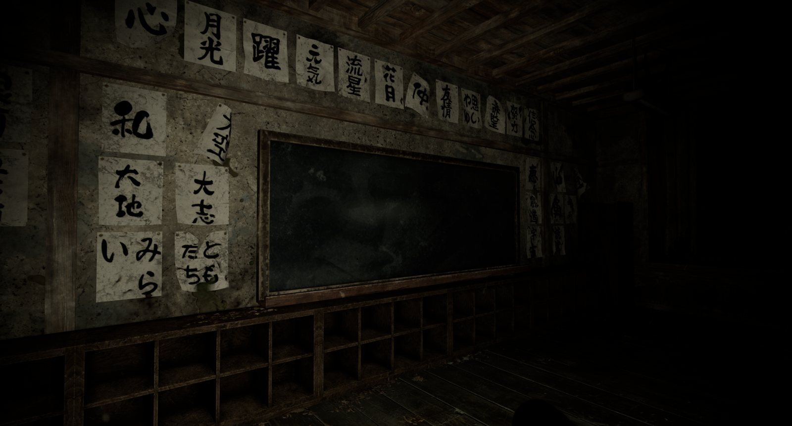
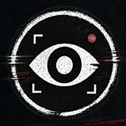
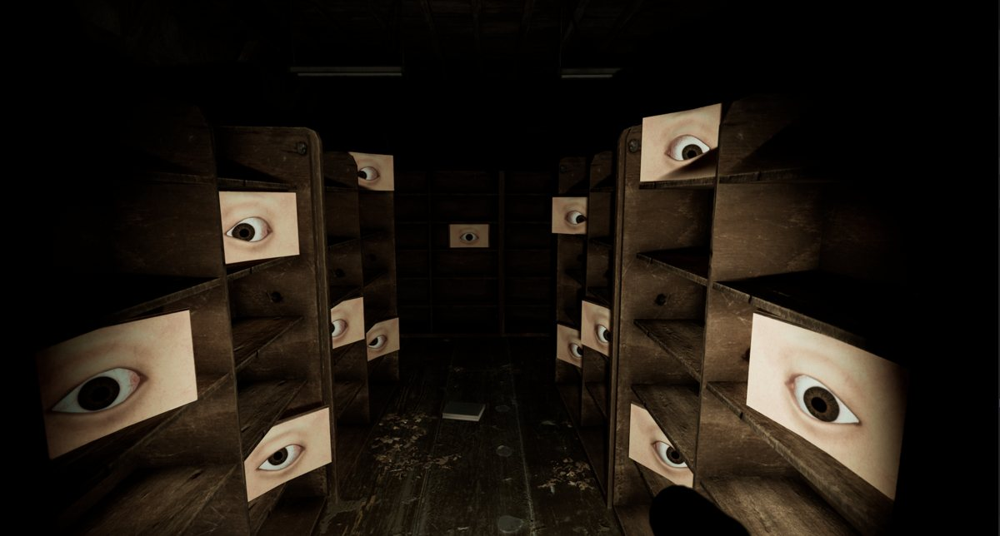
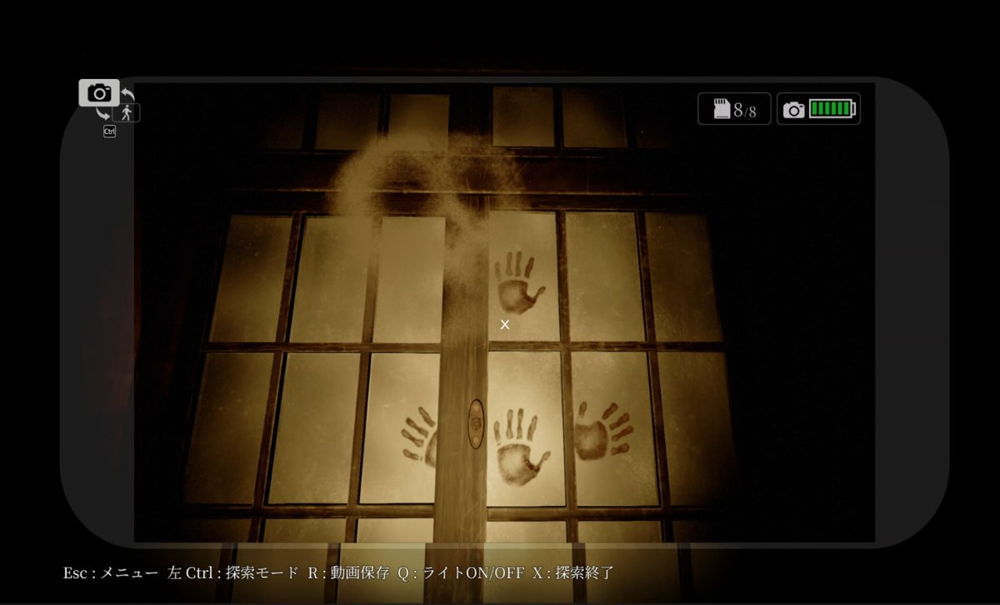
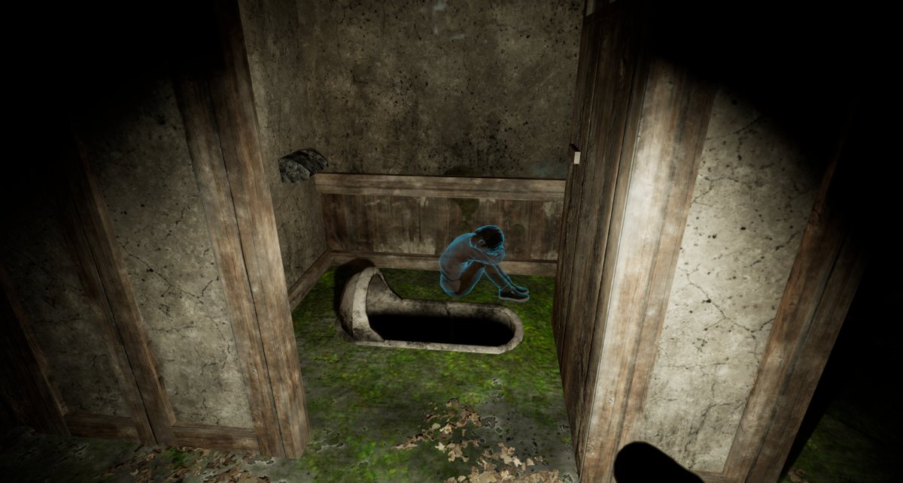

_
登録者数10万人を
目指せ。
あなたは噂の廃校「屠屋（ほふりや）小学校」へ足を踏み入れる。
目的は、学校に残された都市伝説を撮影し、動画サイトに投稿して収益を得ること。
果たしてあなたは登録者数10万人を達成できるのか―。
そして、その先に待つものとは……？

『怖録』の公式TikTokアカウントを解禁しました。こちらでは、思わず背筋が凍る怖い話をひたすらお届けしていきます。
眠れない夜のお供にどうぞ。
『怖録』のリリースが決定しました！ 発売日や価格などの詳細は、決まり次第このサイトと公式Xでお知らせします。
Steamのウィッシュリストに登録して、続報をお待ちください。
「東京ゲームショウ2026」に『怖録』を出展しました。
ブースにお立ち寄りいただいた皆さま、本当にありがとうございました！
いただいたご感想やご意見は、今後の開発に活かしてまいります。
『怖録』の公式Xアカウントを開設しました。開発の様子や最新情報を、いち早くお届けしていきます。ぜひフォローしてください。
恐怖を撮れ。
動画をバズらせろ。

一人称視点『怖録』(おそろく)は、廃校となった小学校を探索する一人称視点の3Dホラーゲームです。
プレイヤーは心霊系動画投稿者となり、校内に残された都市伝説や怪奇現象を撮影しながら探索を進めます。
撮影した映像を編集/投稿し、登録者数やいいね数を伸ばしながら、
より多くの怪異や学校に隠された秘密へと迫っていきます。




登録者数10万人を
目指せ。
あなたは噂の廃校「屠屋（ほふりや）小学校」へ足を踏み入れる。
目的は、学校に残された都市伝説を撮影し、動画サイトに投稿して収益を得ること。
果たしてあなたは登録者数10万人を達成できるのか―。
そして、その先に待つものとは……？
ワタヌキさん
CV：村上 奈津実
ワタヌキさんってなんなんだ？
画像をクリックするとYouTubeで動画が開きます。
※開発中の画面です。変更する場合もあります。